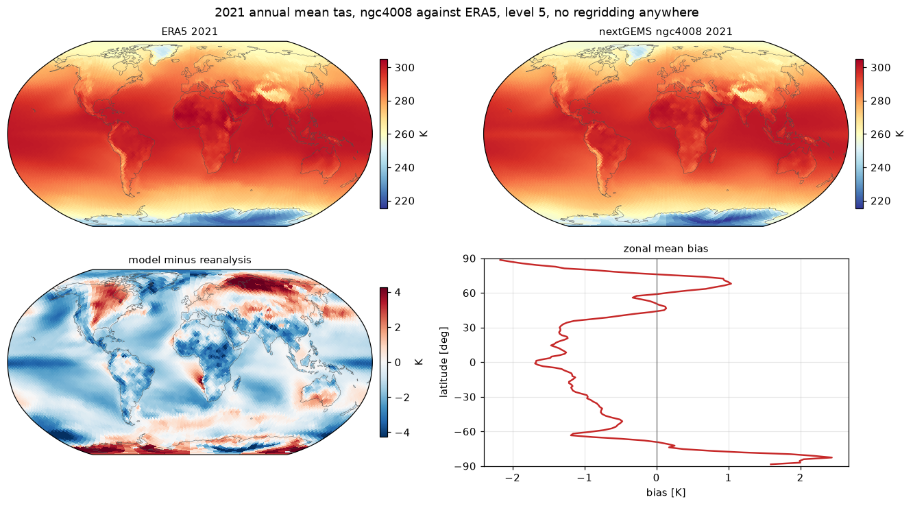

Comparing two datasets without regridding¶
This is the example the hub exists for.
Comparing a model run against a reanalysis normally starts with a day of grid work: find the two grids, pick a common target, choose a remapping scheme, generate weights, argue about conservative versus bilinear, and discover afterwards that the difference field has a suspicious pattern at the poles. The comparison itself is the easy part and it is never where the time goes.
Both stores below are HEALPix, nested, on the same sphere. Cell i at level
5 is the same patch of the planet in both files, by construction, because
the grid is defined by the index rather than agreed by convention. So the
grid work is not simplified here. It is absent.
Run it here
Every code block on this page has a Try in Python button. The blocks share one
Python session, like notebook cells, so run them in order from the top. This example also needs healpix-geo: where it is not installed, the blocks that use it stop with an import error.
You can edit a block and run it again; Reset brings the original back.
Open in Notebook opens the whole lesson in a notebook of its own, with its own session.
The two stores¶
ECMWF's ERA5 reanalysis and the nextGEMS ICON cycle-4 run, from different institutions through different pipelines, both published at HEALPix level 5. One is monthly, the other daily.
import cartopy.crs as ccrs
import matplotlib.pyplot as plt
import numpy as np
import xarray as xr
from healpix_geo import nested
S3 = {"anon": True, "endpoint_url": "https://s3.waterpark.dkrz.de"}
ERA5 = "s3://reanalysis/healpix/era5/P1M/level_5.zarr"
MODEL = "s3://nextgems/healpix/ngc4008/P1D/level_5.zarr"
era5 = xr.open_zarr(ERA5, storage_options=S3, chunks=None)
model = xr.open_zarr(MODEL, storage_options=S3, chunks=None)
for name, store in (("ERA5", era5), ("ngc4008", model)):
print(
f"{name:8s} level {store.attrs.get('healpix_level', '7')}, "
f"{store.sizes['cell']:6d} cells, "
f"{store.sizes['time']:6d} time steps"
)
assert era5.sizes["cell"] == model.sizes["cell"]Three things have to line up¶
Variable, level and time. Only the middle one is a grid problem, and it is the one that turns out to be free.
Variable. Both of these happen to use CMOR names, so tas is tas in
each. Do not count on it: the hub carries stores using ECMWF short names
and stores using native model names, and no amount of clever indexing
fixes a naming difference. That is a lookup table you write once.
Level. Equal, so there is nothing to do. Had the model been a level
finer, model.coarsen(cell=4).mean() would have been the entire
adjustment, as in the previous example.
Time. A monthly mean series and a daily mean series, both reduced to
one annual mean. Neither reduction is a plain .mean("time"): months have
different lengths, so the monthly series needs day weights, and the daily
series needs a check that the year is actually complete.
YEAR = "2021"
era5_months = era5["tas"].sel(time=YEAR)
model_days = model["tas"].sel(time=YEAR)
days_in_month = era5_months["time"].dt.days_in_month
era5_mean = ((era5_months * days_in_month).sum("time") / days_in_month.sum()).load()
model_mean = model_days.mean("time").load()
print(f"{era5_months.sizes['time']} ERA5 months, {model_days.sizes['time']} model days")
print(
f"month lengths {int(days_in_month.min())}-{int(days_in_month.max())}, "
f"summing to {int(days_in_month.sum())}"
)The comparison¶
And that is it. Two arrays of 12288 numbers each, describing the same 12288 patches of the Earth, so subtraction is defined. No weights file, no interpolation, no target grid to agree on, and nothing that needed to be told where the poles are.
bias = model_mean.values - era5_mean.values
print(f"mean bias {bias.mean():+.2f} K")
print(f"rms bias {np.sqrt((bias**2).mean()):.2f} K")
print(f"worst cell {np.abs(bias).max():.2f} K")The global mean bias is an unweighted mean over cells, and correct for the reason given in the equal area example.
The plot¶
level = era5.attrs["healpix_level"]
latitude = era5["latitude"].values
_, rings = np.unique(np.round(latitude, 8), return_inverse=True)
ring_lat = np.array([latitude[rings == r][0] for r in range(rings.max() + 1)])
zonal_bias = np.array([bias[rings == r].mean() for r in range(rings.max() + 1)])
def rasterize(values, nlon=1080, nlat=540):
lon = np.linspace(-180, 180, nlon)
lat = np.linspace(90, -90, nlat)
mesh_lon, mesh_lat = np.meshgrid(lon, lat)
cells = nested.lonlat_to_healpix(mesh_lon.ravel(), mesh_lat.ravel(), level)
return np.asarray(values)[cells.astype("int64")].reshape(mesh_lat.shape), lon, lat
vmin = float(min(era5_mean.values.min(), model_mean.values.min()))
vmax = float(max(era5_mean.values.max(), model_mean.values.max()))
span = float(np.percentile(np.abs(bias), 99))
fig = plt.figure(figsize=(12, 6.6), layout="constrained")
for index, (title, values) in enumerate(
[
(f"ERA5 {YEAR}", era5_mean.values),
(f"nextGEMS ngc4008 {YEAR}", model_mean.values),
],
start=1,
):
raster, lon, lat = rasterize(values)
ax = fig.add_subplot(2, 2, index, projection=ccrs.Robinson())
ax.coastlines(linewidth=0.3, color="0.3")
ax.set_global()
mesh = ax.pcolormesh(
lon,
lat,
raster,
cmap="RdYlBu_r",
vmin=vmin,
vmax=vmax,
shading="auto",
transform=ccrs.PlateCarree(),
)
ax.set_title(title, fontsize=10)
fig.colorbar(mesh, ax=ax, shrink=0.72, pad=0.02, label="K")
raster, lon, lat = rasterize(bias)
ax = fig.add_subplot(2, 2, 3, projection=ccrs.Robinson())
ax.coastlines(linewidth=0.3, color="0.3")
ax.set_global()
mesh = ax.pcolormesh(
lon,
lat,
raster,
cmap="RdBu_r",
vmin=-span,
vmax=span,
shading="auto",
transform=ccrs.PlateCarree(),
)
ax.set_title("model minus reanalysis", fontsize=10)
fig.colorbar(mesh, ax=ax, shrink=0.72, pad=0.02, label="K")
ax_zonal = fig.add_subplot(2, 2, 4)
ax_zonal.plot(zonal_bias, ring_lat, color="#c62828", lw=1.6)
ax_zonal.axvline(0.0, color="0.4", lw=0.8)
ax_zonal.set_yticks(np.arange(-90, 91, 30))
ax_zonal.set_ylim(-90, 90)
ax_zonal.set_xlabel("bias [K]")
ax_zonal.set_ylabel("latitude [deg]")
ax_zonal.set_title("zonal mean bias", fontsize=10)
ax_zonal.grid(alpha=0.3)
fig.suptitle(
f"{YEAR} annual mean tas, ngc4008 against ERA5, level {level}, "
"no regridding anywhere",
fontsize=12,
)
fig.savefig("08_cross_dataset.png", dpi=110, bbox_inches="tight", facecolor="white")
plt.show()
Comparing two datasets without regridding
What is left to be careful about¶
The grid stopped being a problem, which means the remaining problems are the interesting ones, and they are all scientific:
- The two
tasfields are not the same thing. ERA5's is a diagnostic from a reanalysis with data assimilation; the model's is a diagnostic from a free-running simulation. A free run has no reason to reproduce a particular year's weather, so day-to-day agreement is not expected and only the climatology is worth reading. - One year is a short climatology. The bias field contains a real
model bias plus one realisation of internal variability, and the figure
cannot tell you which is which. Widen
YEARbefore drawing any conclusion from it. - Sea ice and orography dominate the extremes. The largest values in the difference map are where the two datasets disagree about what is at the surface, not where they disagree about the atmosphere. That is worth masking before quoting a number.
Those are questions about climate, not about file formats, which is the point.
Run it yourself: examples/08_cross_dataset.py